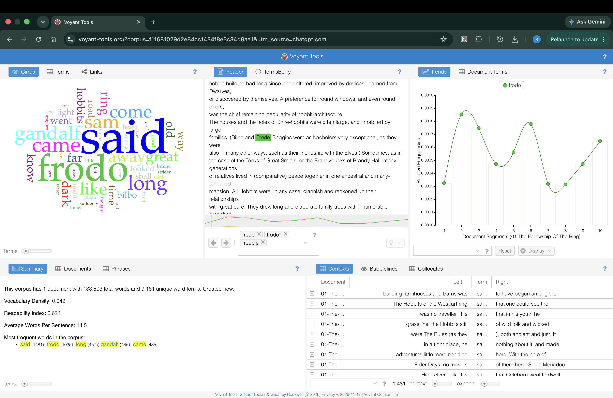
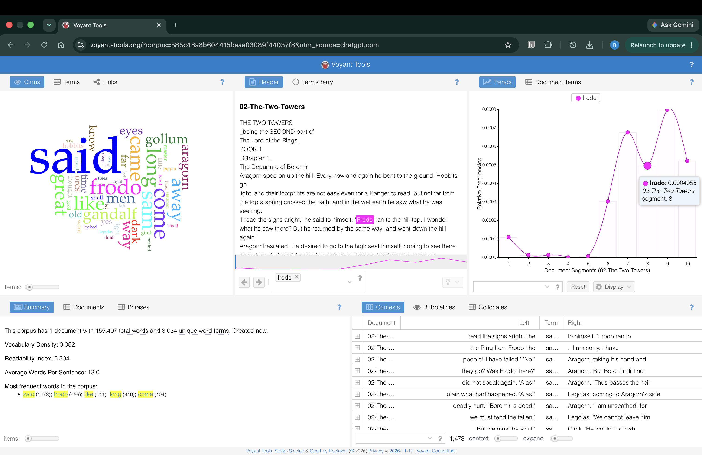
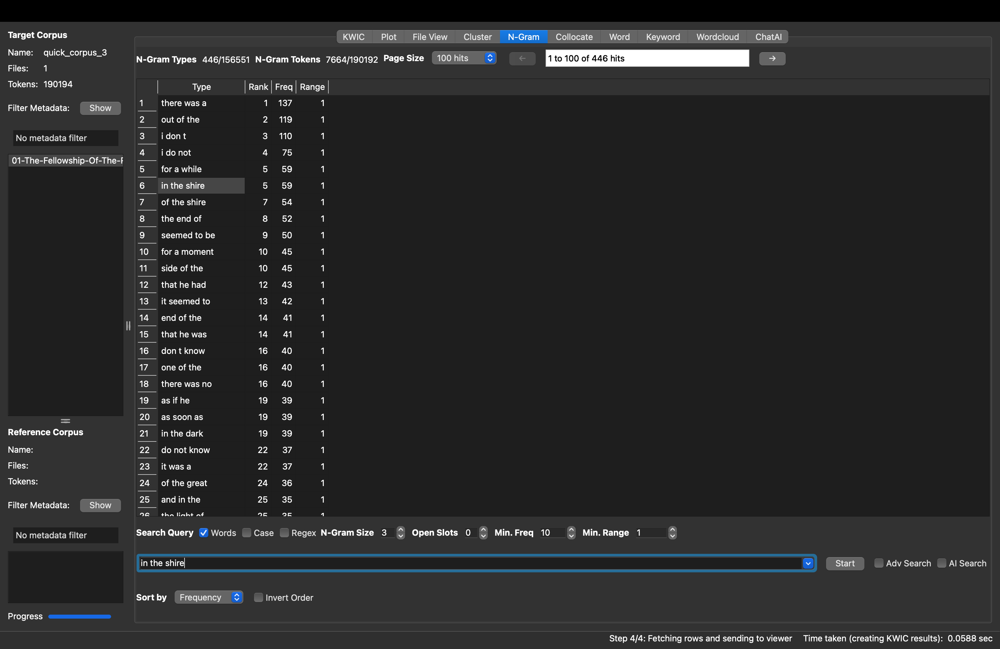
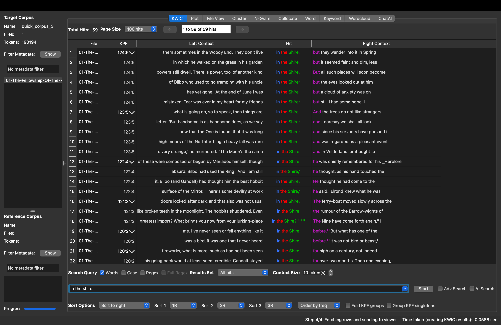
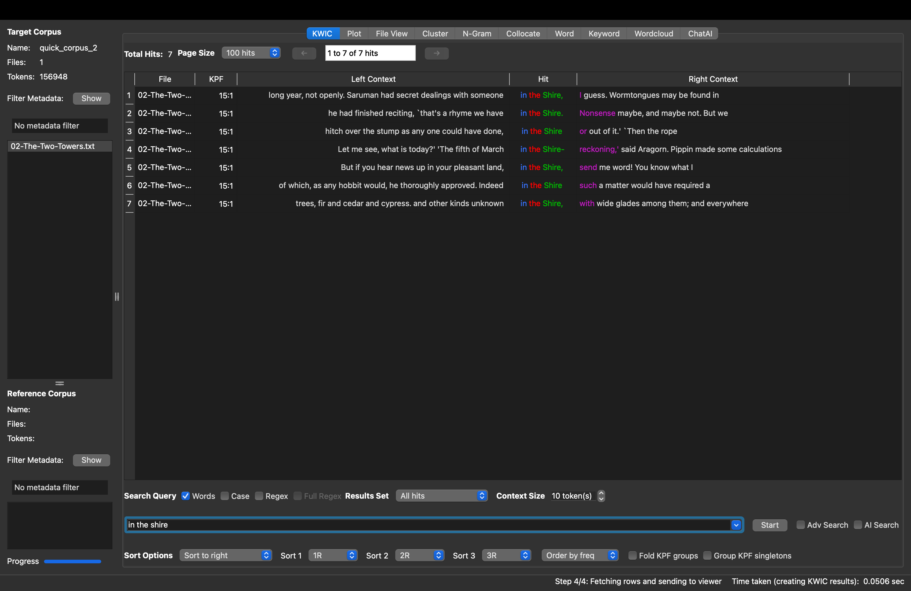

Corpus Analysis

For this assignment, I chose to compare The (iconic) Fellowship of the Ring and The Two Towers by J.R.R. Tolkien. I wanted to see how often certain words and phrases appeared in two of my favorite books. I used Voyant Tools to be able to look at word frequencies and AntConc to be able to look at repeated, specific, phrases. I thought comparing these two books would be interesting because they are part of the same series but focus on vastly different parts of the story.
Voyant Analysis
The Fellowship of the Ring

View The Fellowship of the Ring
I chose to look at the word "Frodo" because he is the one carrying the Ring throughout the book. His name appears 1,035 times, which makes sense considering he is one of the main characters with the biggest plotline. I also noticed that his name appears more often in certain sections than others.
The Two Towers

When I looked at The Two Towers, I noticed that Frodo's name only appeared 456 times, compared to 1,035 times in The Fellowship of the Ring. His name was barely mentioned in the beginning sections, although it became much more common toward the end. I think this makes sense because the book follows different characters and their adventures before coming back to focus more on Frodo and Sam.
AntConc Analysis
The Fellowship of the Ring


View The Fellowship of the Ring
When I used the N-Gram tool in AntConc, I looked at groups of three words that appeared frequently in The Fellowship of the Ring. I noticed that phrases like "there was a" and "in the Shire" appeared many times. I chose to look more closely at "in the Shire" because I wanted to see how often it appeared in both books. I believe the Shire is also quite iconic and wasn't sure if it was due to reputation or good setting building for the book.
When I used AntConc to look at The Fellowship of the Ring, I noticed that the phrase "in the Shire" appeared 59 times. The Shire is where Frodo and the other hobbits live, so of course it would be mentioned a bit. Looking at the words surrounding the phrase, I noticed that the characters often mention the Shire when talking about their home and reminiscing.
The Two Towers

Although, when I looked at The Two Towers, the phrase "in the Shire" only appeared 7 times, much more different compared to the first book. This makes sense because the characters have completely left the Shire, having been gone for months now,ß and are traveling to different places. Even though the Shire is still mentioned, it is not as important to the setting of the second book.
After using Voyant Tools and AntConc, I noticed some differences between the two books. Frodo's name appeared more often in The Fellowship of the Ring, and the phrase "in the Shire" was also used more frequently. I think this shows how the story changes as the characters leave their home and travel to different places. These tools helped me see patterns in the books, which interestingly enough is mostly the setting, that I probably would not have noticed by just simply reading them.